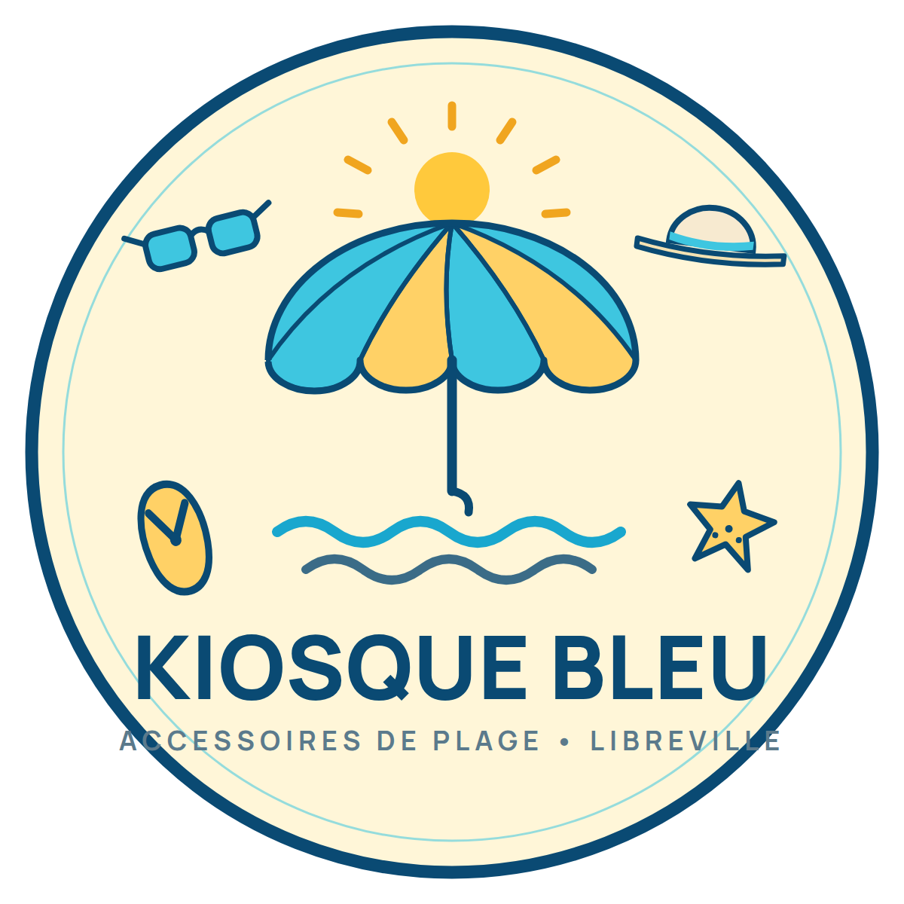
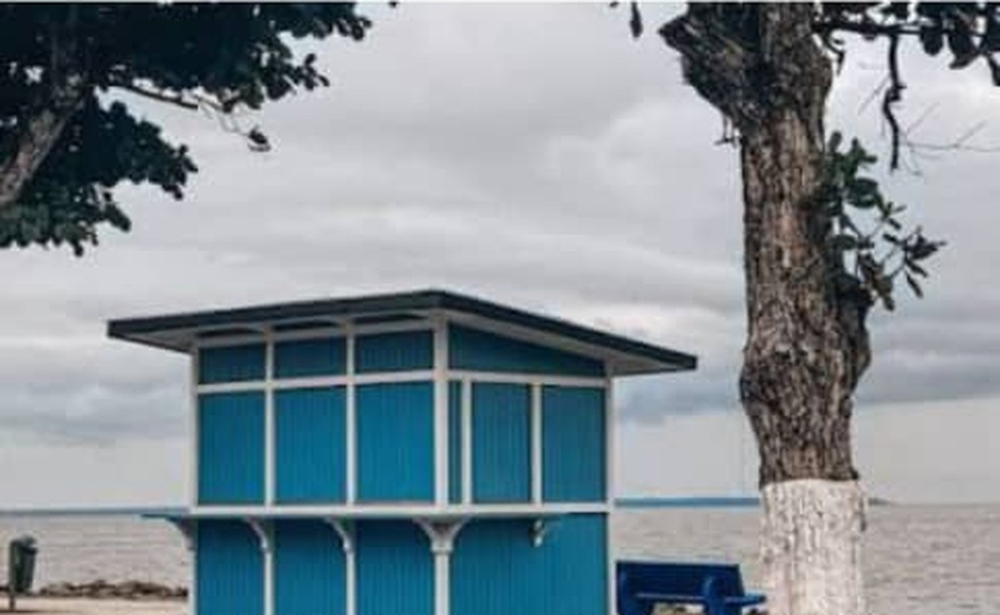
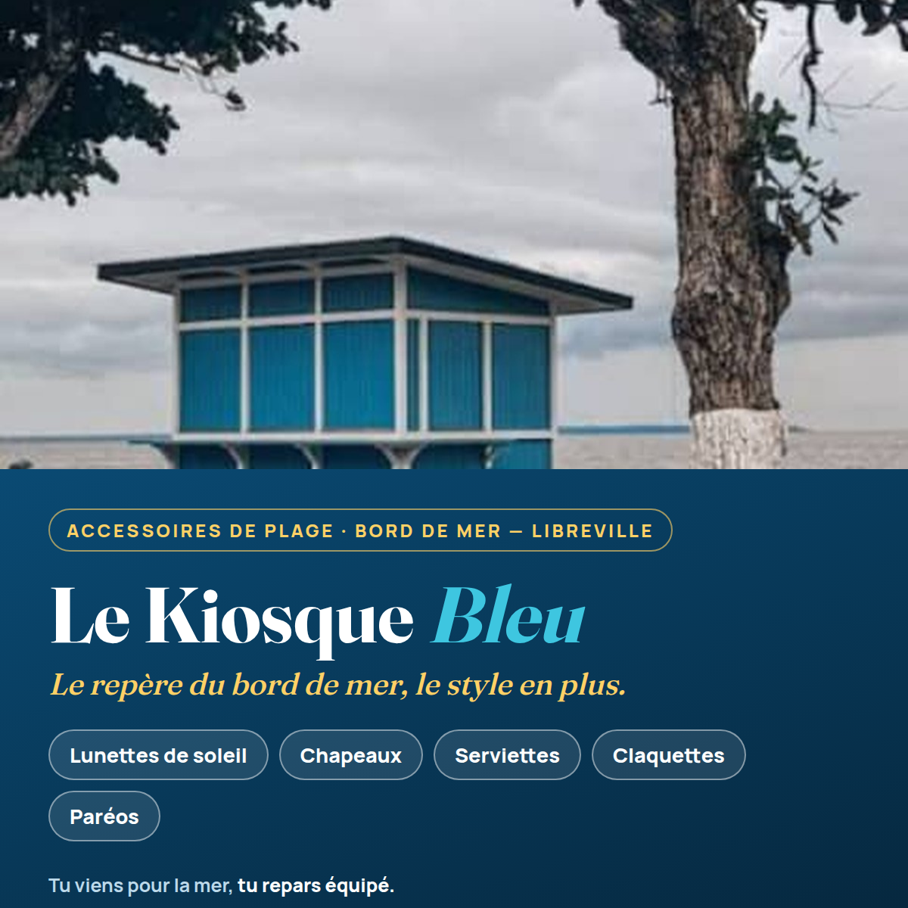
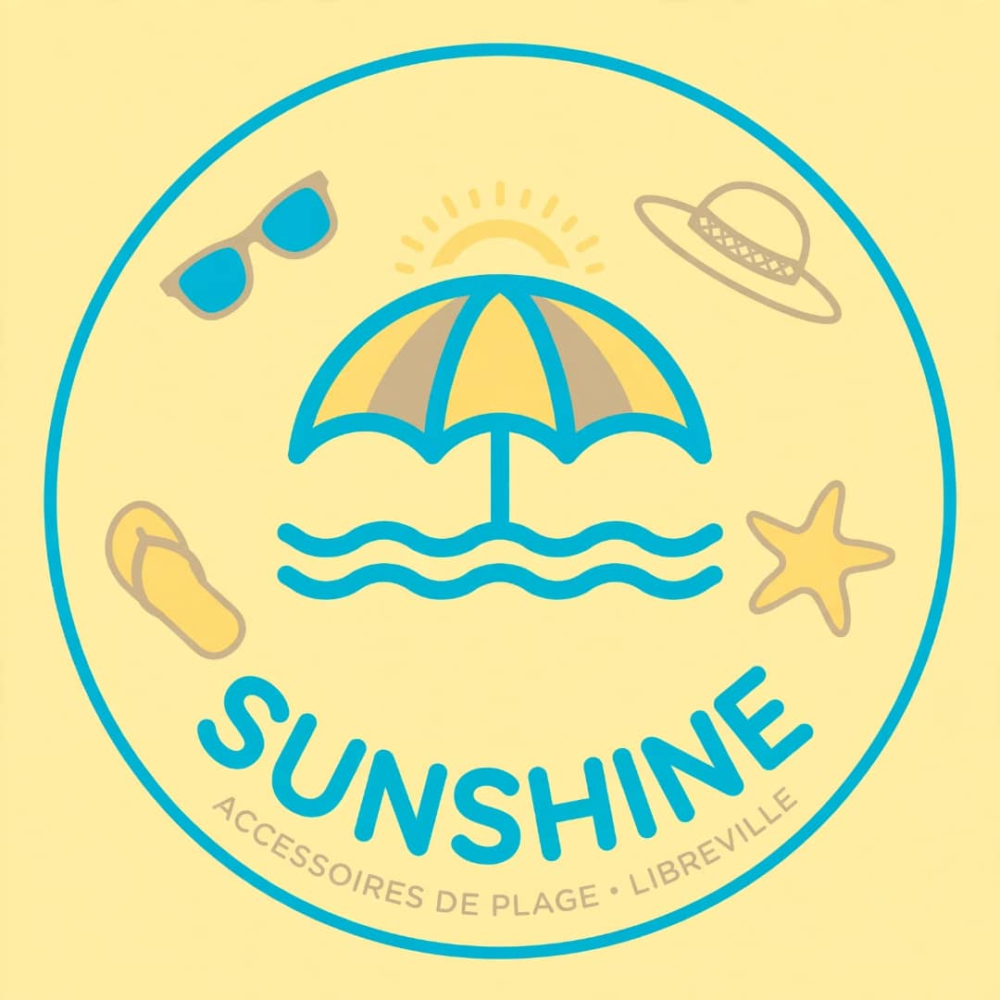
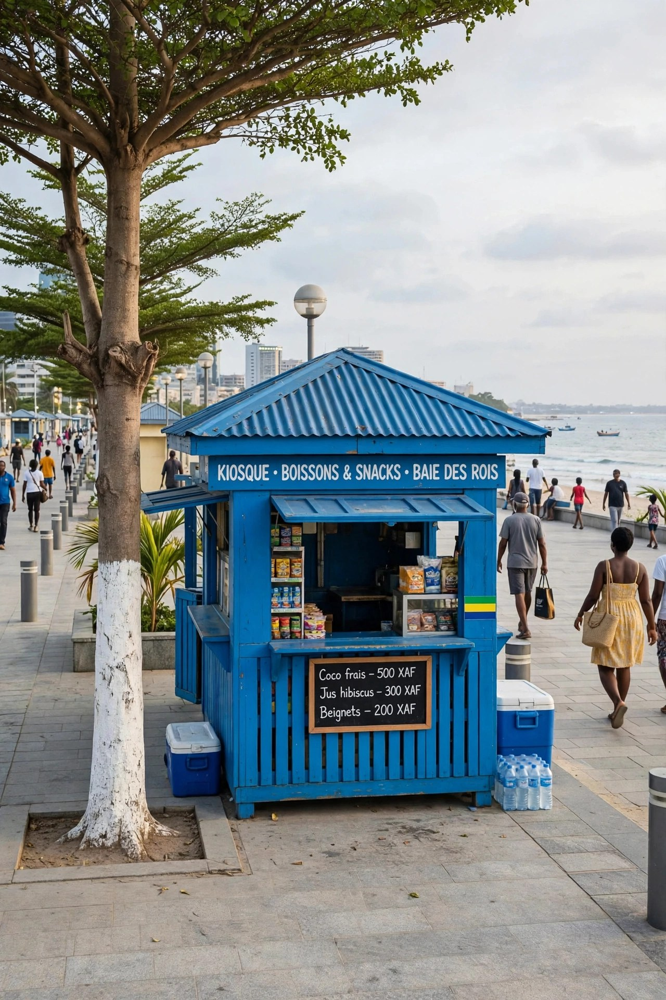
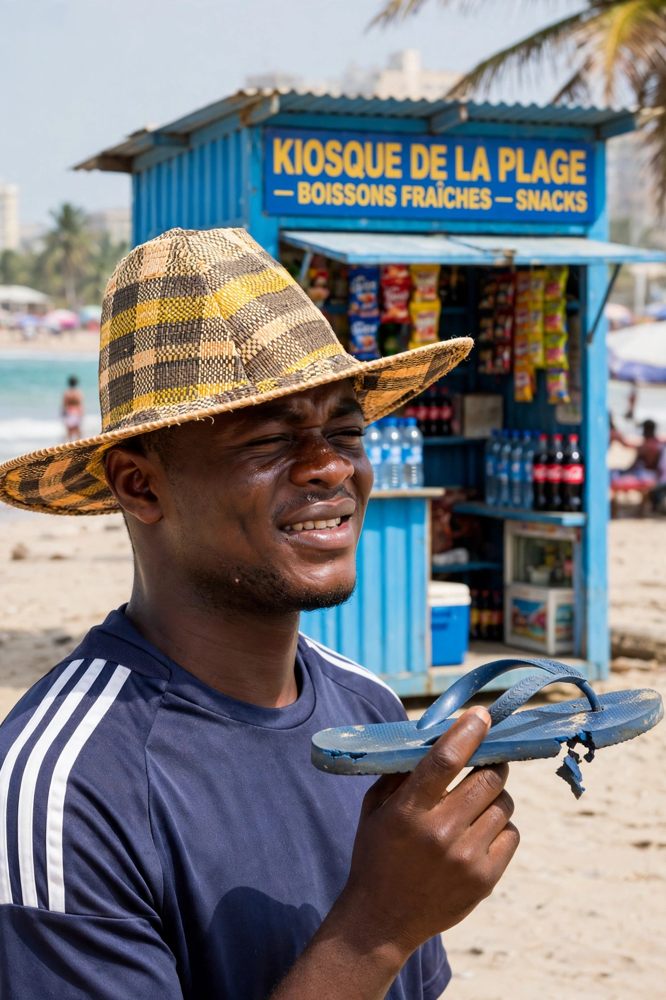
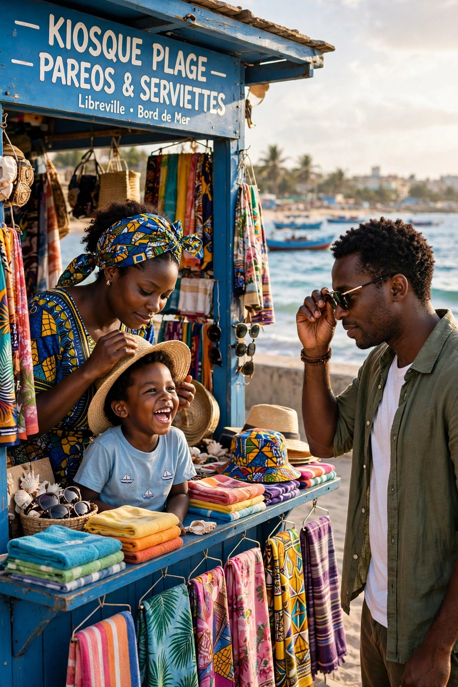
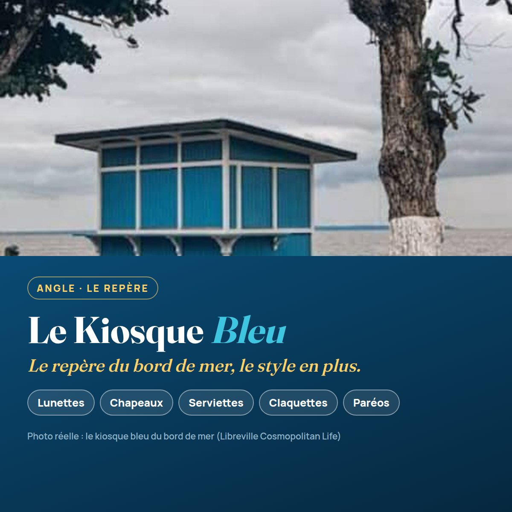
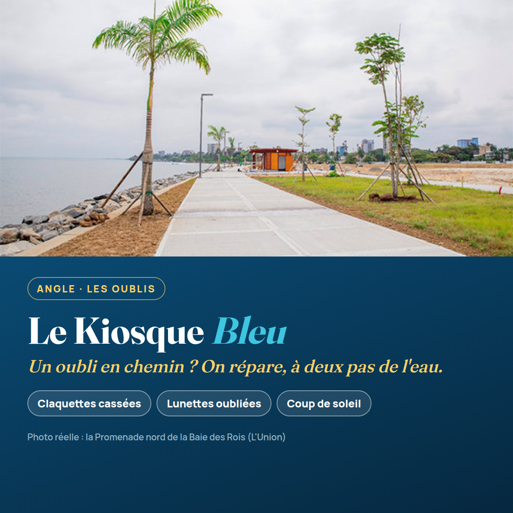
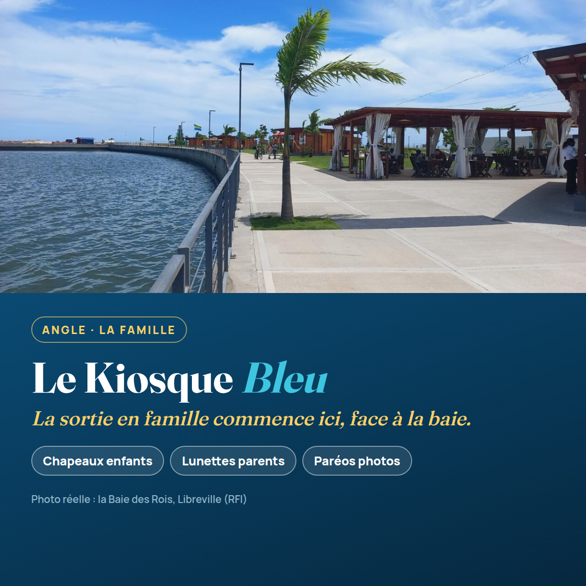

Accessoires de plage — lunettes de soleil, chapeaux, serviettes, claquettes, paréos — vendus dans un kiosque en bord de mer à Libreville, à la Baie des Rois. Cette page raconte tout le travail réalisé : le prompt de départ, le choix du nom, les contenus, le kit de communication, la production des visuels et des vidéos — jusqu’à la version finale, cohérente, en photos réelles.

Le projet naît d’un exercice de la formation « IA générative et innovation — Jour 3 » : un prompt de consultant en communication, en deux étapes — d’abord choisir, ensuite rédiger — avec une règle d’or : n’invente rien, pose la question quand une information manque.
La cible et le ton n’étaient pas fournis : ils ont été déduits par l’expertise terrain, puis validés par le porteur du projet.
Trois noms proposés, chacun avec son slogan et sa logique. Le consultant recommandait « Mbolo Plage » ; le porteur du projet a tranché pour « Le Kiosque Bleu » — le repère que tous les Librevillois connaissent déjà.
« Mbolo », le bonjour que tout le Gabon comprend : la marque salue le client avant même qu’il s’arrête. Le plus gros potentiel de bouche-à-oreille.
Zéro franc à dépenser pour se faire connaître : les kiosques bleus sont déjà dans la tête des Librevillois. Le slogan final retenu pour tout le kit : « Le repère du bord de mer, le style en plus. »
Le plus jeune des trois, pensé pour TikTok et les statuts WhatsApp : le 241 signe l’ancrage gabonais.
Une fois le nom choisi : trois posts de 60 mots exactement (comptés et vérifiés), un par angle — le repère, les oublis, la famille — et le script de la vidéo de 30 secondes.
Tu connais le kiosque bleu du bord de mer? C'est là que Libreville s'équipe avant la plage. Lunettes de soleil, chapeaux, serviettes, claquettes et paréos: tout ce que tu as oublié, on l'a. Familles en sortie, amis en balade, promeneurs du dimanche, passez nous voir ce week-end. Le Kiosque Bleu, le repère du bord de mer, le style en plus.
Soleil de midi, sable, et toi pieds nus sans claquettes? Au Kiosque Bleu, on répare les oublis de plage: lunettes de soleil, chapeaux contre les coups de soleil, serviettes, paréos aux couleurs du Gabon. Tu viens pour la mer, tu repars équipé, léger, prêt à profiter. On t'attend au bord de mer, entre la corniche et l'océan, avec le sourire.
Ce week-end, la famille débarque au bord de mer? Pense au Kiosque Bleu avant de poser les serviettes. Chapeaux pour les enfants, lunettes pour papa et maman, claquettes pour tout le monde, paréos pour les photos. Tout est là, au même endroit, à deux pas de l'eau. Le Kiosque Bleu, c'est l'arrêt qui transforme une sortie en belle journée réussie.
Didascalie : ouverture sur le kiosque bleu face à l’océan, puis les produits en plans rapides, une famille qui s’équipe, et le coucher du soleil pour finir.
« Tu vois le kiosque bleu, là-bas, face à l'océan? C'est le repère de tous ceux qui aiment la plage à Libreville. Lunettes de soleil, chapeaux, serviettes, claquettes, paréos colorés: tout ce qu'il faut pour profiter du bord de mer, sans rien oublier et en toute simplicité. En famille, entre amis ou en simple balade au coucher du soleil, passe nous voir. Le Kiosque Bleu: le repère du bord de mer, le style en plus. »
Deuxième consigne de la formation : transformer les contenus en kit complet — un visuel carré, les trois posts, le script, et une présentation de cinq slides.

Le document qui présente le projet au public, en cinq temps :
1. Couverture — le nom et le slogan
2. Le constat et le projet — les oublis de plage, le kiosque qui les répare
3. L’offre — les cinq familles d’accessoires
4. La cible — familles, jeunes, promeneurs de la corniche
5. Le kit — posts, visuel et vidéo réunis
Le porteur avait déjà un badge, au nom de « Sunshine ». Il a été repris et amélioré : même idée (le badge rond, le parasol, les accessoires), mais le nom du projet choisi à l’étape 1, une composition resserrée et la charte du kit — bleu kiosque, turquoise, jaune soleil.

Chaque post a d’abord reçu un visuel généré au style réaliste, situé à la Baie des Rois. Contrôle qualité : le générateur avait ajouté des enseignes « boissons & snacks » sur deux visuels et des prix inventés sur une ardoise — des incohérences avec l’offre réelle (accessoires de plage uniquement). Décision : refaire les trois visuels à partir de vraies photos de la Baie des Rois, chacune créditée.






Le script n’a jamais changé : c’est la même voix off (synthèse vocale du script de l’étape 2), les mêmes cartes d’ouverture et de fin aux couleurs du projet, le même format vertical 720 × 1280. Ce qui a changé entre les deux versions : les images.